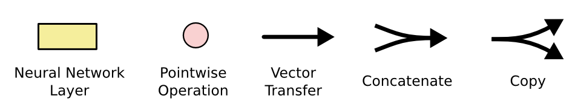
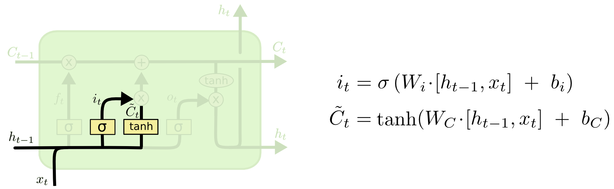
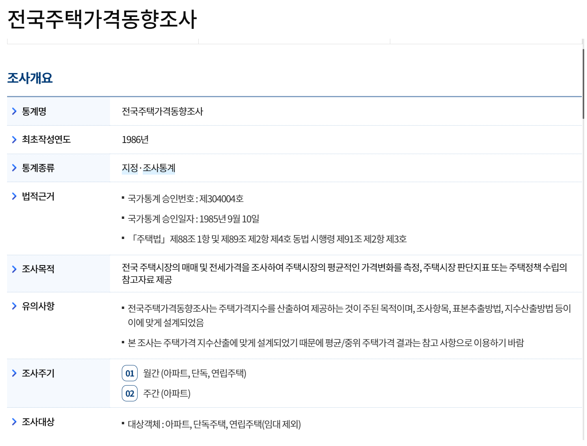
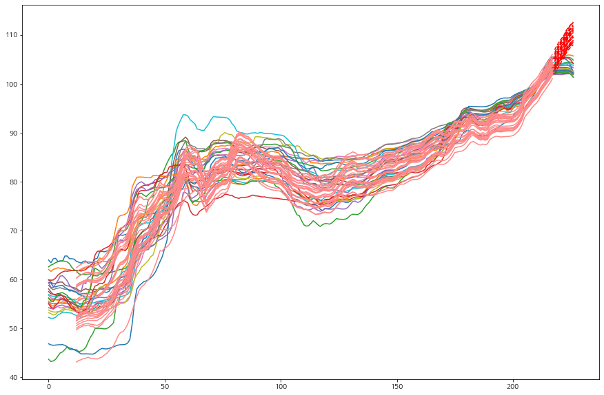

9주차 · 2교시
순환신경망
RNN · LSTM · GRU
뉴럴 네트워크는 시계열을 어떻게 조립했나
23 NN_timeseries.ipynb · 24 CNN_LSTM.ipynb
되짚기
데이터가 바뀌면 층을 바꾼다
CNN 이 필터 하나로 공간을 훑었듯, RNN 은 가중치 하나로 시간을 훑는다. 발상이 같다.
실습 데이터
KOSPI 지수
노트북에서는 yfinance 로 직접 받아 온다.
받는 날짜에 따라 그림이 달라지는 게 정상이다. 강의안 그림은 2016–2019 구간.
값을 그대로 쓰지 않는다 — 차분에 전일 종가를 한 번 더 나눠 수익률로 만든다.
시계열 분석의 거의 전부
잘라서 밀면 지도학습이 된다
우리가 아는 그 X 와 y 다. ARIMA 도, RNN 도, 트랜스포머도 데이터를 만드는 방식은 전부 이것이다.
한 칸씩 밀면서 만든다
과거 n 일 입력 → 다음 1 일 출력
샘플 1

입력 구간 1
샘플 2

입력 구간 2
빨간 꼬리가 예측할 다음 한 칸이다. 이렇게 잘라 두면 우리가 아는 지도학습이 된다.
RNN 의 전제
“하루하루의 변화는 다 같은 규칙을 따를 것이다”
그냥 펼치면?
60일치를 60개 가중치로 — ARIMA 와 같은 방식. 이렇게 해도 된다.
순환시키면
가중치 하나가 60번 이동한다. 길이가 늘어나도 가중치는 그대로다.
펼쳐 보면
같은 가중치가 끝까지 간다
W₁ 도 W₂ 도 b 도 전 구간에서 같은 값이다. 시계열이 60이든 600이든 가중치는 늘지 않는다.
숫자를 넣고 한 걸음씩
히든 스테이트는 2차원 · 버튼을 눌러 한 시점씩
같은 가중치에 여러 시계열을 넣어 본다
개념 예시 — 실제 학습 결과가 아니다
움직임이 닮은 계열끼리 두 숫자의 부호와 크기가 닮았다. 우리가 그렇게 시킨 적은 없다.
학습이 끝나면
두 숫자가
지도가 된다
마지막 히든 스테이트를 좌표로 찍었더니 움직임이 닮은 계열끼리 같은 사분면에 모였다.
가로축은 방향, 세로축은 흔들림으로 읽힌다. 그런데 우리가 축에 이름을 붙인 적은 없다 — 예측을 맞히라고만 시켰다.
그러니 RNN 은 예측기이자 요약기다. 긴 시계열 하나를 숫자 몇 개로 줄여 준다.
여기까지가 RNN 이다
가중치 한 벌로 긴 시계열을 읽고,
그 흐름을 벡터 하나로 남긴다
길이는 문제가 아니다
60 이든 600 이든 W₁ · W₂ · b 한 벌이면 된다. 길어져도 파라미터는 늘지 않는다.
맥락이 남는다
마지막 히든 스테이트에 방향과 흔들림이 담긴다. 이것이 컨텍스트 벡터다.
이 이름은 3교시 언어 모델에서 그대로 다시 나온다.
확장
한 시점에
벡터를 통째로
코스피 200 종목
하루치를 200 차원으로 한 번에 넣으면 종목끼리 주고받는 영향까지 같이 학습된다.
로봇의 센서
관절 각도 · 토크 · 가속도를 한 시점의 벡터로 묶는다. 몸 전체가 한 시계열이 된다.
바뀌는 건 W₁ 의 크기뿐이다. 구조도, W₂ 도, b 도 그대로다.

오른쪽은 선명하고 왼쪽으로 갈수록 사라지는 기억의 띠
먼 과거최근
길이는 얼마든지 늘릴 수 있다
같은 가중치를 반복해서 쓰는 구조라 시점 수에 제한이 없다.
그런데 오래된 것부터 지워진다
매 시점 h 가 새 입력과 섞여 다시 tanh 를 지난다. 옛 정보의 지분이 스텝마다 곱해져 줄어든다.
해결 시도 —
층을 더 쌓기
히든 차원 늘리기
기억을 둘로 나누기 → LSTM
LONG SHORT-TERM MEMORY · 1997
겉은 같고, 안이 다르다

LSTM 사슬 구조

범례 — 신경망 층 · 원소별 연산 · 벡터 전달 · 연결 · 복사
RNN 은 반복 모듈 안에 층이 하나였다.
LSTM 은 넷이 서로 맞물린다.
Hochreiter & Schmidhuber (1997)
① Forget Gate
이전 기억을 쓸 것인가

Forget gate 도해와 수식
시그모이드로 0 또는 1 을 만들어 이전 cell state 를 쓸지 말지 결정한다.
0 이면 곱해져서 장기 기억이 통째로 꺼진다.
② Input Gate
새 정보를 더할 것인가

Input gate 도해와 수식
tanh 가 “무엇을 더할지”를 만들고, 시그모이드 가 “더할지 말지”를 정한다.
두 개가 곱해져서 위로 올라간다.

Cell State 도해와 수식
(이전 기억 × forget) + (새 후보 × input) = 이번 기억.
위를 가로지르는 이 선이 장기 기억의 고속도로다 — 거의 손대지 않고 흘려보낸다.
④ Hidden State
단기 기억을 뽑아낸다

Hidden State 도해와 수식
갱신된 장기 기억을 tanh 로 누른 뒤 output gate 와 곱한다.
이 값이 다음 칸으로도 가고, 예측에도 쓰인다.
한 화면에서 다시 걸어 본다
버튼을 눌러 한 단계씩
두고두고 쓸 도구
시그모이드는
스위치다
거의 0 또는 1을 가리킨다. 곱하면 통과 / 차단이 된다.
“이 변수가 중요한데 항상 필요하진 않다” 싶을 때 — 마지막에 시그모이드 하나 얹어 곱한다.
10주차 MoE 의 라우터도 정확히 같은 아이디어다.

LSTM 예측 결과
솔직하게
그림으로는
큰 차이가 없다
결국 직전 랙으로 다음 한 칸을 예측하는 일이기 때문이다.
그럼 무엇을 봐야 하나 — 예측값이 아니라 히든 스테이트다.
뉴럴 네트워크에서 가장 강력한 건 언제나 중간의 벡터였다.
GRU — 게이트를 둘로 줄이면
Gated Recurrent Unit · 2014

GRU 도해와 수식
Cell State 없음
Hidden State 하나로 처리
Update Gate
이전과 이번을 몇 대 몇으로 합칠지

R-ONE 부동산통계정보 화면
우리 분야 사례
주택매매
가격지수

전국주택가격동향조사 조사개요
1986년부터의 지정통계. 월간·주간으로 아파트·단독·연립 지수를 제공한다.
reb.or.kr — R-ONE 부동산통계정보
종로구 지수로 해 보면
학습 2003.11–2020.12 · 검증 2020.1–2021.5 · 12개월 입력 → 13개월 예측
전체 계열

종로구 지수 전체
지수는 주가보다 훨씬 매끄럽다 — 그래서 결과도 훨씬 그럴듯해 보인다. 그만큼 쉬운 문제이기도 하다.
한 칸에 25개 지역을 넣으면
서울 25개 시군구 가격지수 · 다변량 입력
Simple RNN

25개 시군구 RNN 예측
LSTM

25개 시군구 LSTM 예측
예측이 목적이 아니다 — 맥락 벡터가 목적이다

방문 이력 Seq2Seq — 이전 방문으로 다음 방문 예측
76.8%
50회 이력으로 51번째 방문 시설 예측
예측이 잘된다는 건 맥락 벡터에 정보가 담겼다는 뜻이다. 그 벡터로 군집하면 차량의 성격이 갈린다.
방문 시설 종류만 쓴 결과다 — 사육 두수·계절·날씨·농장 위험도를 더하면 더 정교해진다.

CNN + LSTM 결합 구조 (PM2.5 예측 논문)
CNN → 벡터 → LSTM
이미지를
시계열의 한 칸으로
CNN 에게 “무엇이냐”를 묻지 않는다. 그냥 읽어서 벡터만 만들게 한다.
도시 PM2.5 농도 예측에 CNN 과 LSTM 을 결합한 연구.
케라스에는 이 조합이 ConvLSTM2D 한 줄로 들어 있다.
ConvLSTM2D · 도시 사례
도시 확산
예측
100 × 100 격자 · 10년치 입력 → 다음 해 한 장 출력
여기 데이터는 가상이다 — 원천 데이터를 못 구해 규칙으로 생성했다.
실제 연구에서는 녹지·고도·산림·인구·소득을 전부 채널로 넣는다.
2교시 정리 · 3교시로
인코더–디코더로 묶으면
언어 모델이 된다

인코더–디코더와 Context Vector
시계열은 잘라서 밀면 지도학습이 된다
가중치 하나가 시간을 훑는다 — RNN
기억을 장기·단기 둘로 — LSTM · GRU
예측값보다 중간의 벡터가 값지다
3교시 — 언어도 시계열이다. 실습: 25 언어모델.ipynb · 26 Seq2Seq.ipynb · 27 attention.ipynb